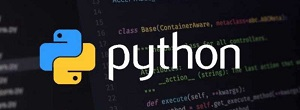
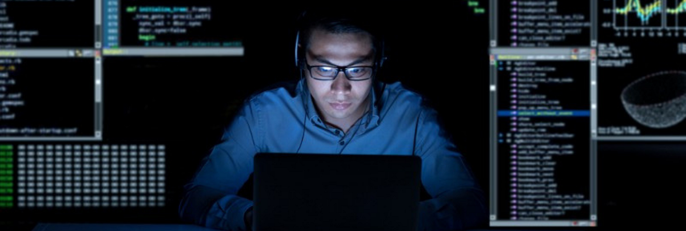

About Me
Photo of me:

I'm Maria Vitória I'm a programmer and web designer I live in Blumenau SC I study programming, psychology and art I'm only 16 years old.
Nice to meet you
Courses
Programming
What is programming?, Dec 8, 2020
Generally, programming is the process of writing, testing, and maintaining computer programs. These programs, in turn, consist of sets of instructions defined by the programmer that describe the tasks that the machine must perform, and that serve various purposes.
The advent of programming is directly linked to the history of computers. The first programmer was a woman named Ada Lovelace, who wrote code to enable the use of Charles Babbage's analysis machine, a robust machine that was difficult to communicate, and is considered the forerunner of modern electronics. computers.
Programming and calculation: Image of Charles Babbage's analysis machine, a metal computer. Differential machine, or analysis machine - created by Charles Babbage (1791 - 1871) A year later, computers became easier to use, and programming gained more and more space in the creation of these technologies. But to truly understand what it is all about, it is important to know two fundamental elements that make up all modern computers, namely hardware and software.
Programmer
What it is to be a programmer, Dec 8, 2020
A programmer is a professional who creates, develops, and maintains different types of software on large systems or for use on personal computers. It uses programming languages such as html, java, c ++ to create commands for programs, to create new functions and utilities.
Programmers develop and complement websites, applications, computer programs, operating systems, business systems, social networks, and limitless possibilities when we talk about something as vast as network and technology. That is why he is an increasingly important professional in all areas of the labor market.
The programmer also handles the collection of user data and subsequent analyzes to make informed and convincing decisions in the development of products and services.
In his routine, the programmer has meetings and conversations with bosses, clients or users to understand the details of the project to be developed, looking for information as purpose, data needed, who will benefit from the use, what format the project will have (application, website, etc. ), among others. Then the project is executed, which can be divided into different tasks such as interface, database creation, testing, among others. Once the project has been created, it is time to correct any bugs and errors that come up, based on user feedback and tests performed on the platform. These processes can be overshot. Since programming is an area of \u200b\u200bactivity that is constantly being improved and updated, it is essential that the programmer allocates part of his hours to study and always improve himself. According to the Department of Labor's General Registry of Employed and Unemployed (Caged), salaries can vary depending on the programmer's education. The average salary of a systems analysis and development professional is R $ 5,883. 42, while that of a computer science graduate is R $ 6,720. 37. The information systems professional, in turn, receives an average of R $ 3,613. 55.